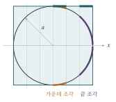

STEP I 2001, 문제 6
계속 읽기 전에 문제를 먼저 읽어 보자. 문제는 STEP Support Programme의 문제 데이터베이스에 있다: step.maths.org/questions/01-s1-q6
도입
공 모양의 빵을 같은 두께로 썬다고 하자. 가운데 근처의 조각은 둘레에 얇은 껍질 띠가 둘린 두툼한 원판이다. 양 끝 근처의 조각은 거의 껍질뿐인 듯한 작은 뚜껑 모양이다. 당연히 끝 조각에 껍질이 더 많지 않을까?
그렇지 않다. 가운데에 가깝게 자르든 끝에 가깝게 자르든, 모든 조각의 껍질 넓이는 정확히 같다. 가운데의 얇은 띠는 둘레는 길지만 거의 수직으로 서 있고, 끝의 뚜껑은 둘레는 짧지만 가파르게 기울어 있어서 껍질이 더 넓은 폭에 걸쳐 펼쳐진다. 이 두 효과가 정확히 상쇄된다. 이것은 아르키메데스(Archimedes)의 정리로, 그는 이 정리를 무척 아껴서 자신의 무덤에 원기둥 안에 든 구를 새겨 달라고 부탁했다. 문제의 둘째 부분은 조금 더 가벼운 규정 이야기이지만, 같은 계산에 바탕을 두고 있다.
시작하기 전에
반지름이 \(a\)인 구는 어떤 곡선을 \(x\)축을 중심으로 회전시켜 얻는가? 그 곡선에 대해 \(\frac{\mathrm{d}y}{\mathrm{d}x}\)는 무엇인가?
반원 \(y = \sqrt{a^2 - x^2}\), \(-a \leq x \leq a\)를 회전시키면 구가 된다. 그러면 \(\frac{\mathrm{d}y}{\mathrm{d}x} = \frac{-x}{\sqrt{a^2 - x^2}} = -\frac xy\)이다. 이것을 기억해 두자. 기울기는 양 끝(\(x \to \pm a\)) 근처에서 가파르고 가운데에서는 완만한데, 이것이 바로 도입에서 설명한 효과이다.
차근차근 풀기
단계 1 껍질 공식이 간단해진다
반원에 대해 \(y\sqrt{1 + (y')^2}\)를 계산해 보아라. 놀라운 일이 일어난다.
\(y' = -x/y\)이므로 \[1 + (y')^2 = 1 + \frac{x^2}{y^2} = \frac{y^2 + x^2}{y^2} = \frac{a^2}{y^2},\] 따라서 \(y\sqrt{1 + (y')^2} = y \cdot \frac{a}{y} = a\)로 상수이다! 그러므로 임의의 두 평면 \(x = x_1\)과 \(x = x_2\) 사이의 껍질 넓이, 곧 겉넓이(surface area)는 \[2\pi\int_{x_1}^{x_2} a\,\mathrm{d}x = 2\pi a(x_2 - x_1).\] 이 값은 두 평면이 어디에 있는지와 상관없이 두 평면 사이의 거리에만 의존한다.
단계 2 껍질은 조각 수에 비례한다
빵을 두께 \(h\)인 조각으로 자르면 각 조각의 껍질 넓이는 \(2\pi ah\)로 모두 같다. 한쪽 끝에서든, 양쪽 끝에서든, 어디에서든 몇 조각을 먹으면, 남은 껍질은 \(2\pi ah\)에 남은 조각의 수를 곱한 것이다.■
단계 3 바삭한 빵의 조건
문제의 힌트는 한쪽 끝에서부터 조각을 먹었을 때 남는 빵을 설명하므로, 그대로 따라가 보자. 조각을 끝 \(x = a\)에서부터 먹어서 남은 부분이 \(x = -a\)부터 \(x = -a + t\)까지라고 하자. “조각을 몇 개 먹든”에 대한 규정은 빵을 아무리 잘게 썰어도 성립해야 하므로, \(t\)가 \(0\)과 \(2a\) 사이의 어떤 값이든 가질 수 있다고 본다. (4단계에서는 양쪽 끝에서 조각을 먹는 경우를 살펴본다.)
주어진 공식을 써서 \(V\)를 계산하여라. 치환 \(s = x + a\)를 쓰면 계산이 더 깔끔해질 것이다.
\(s = x + a\)로 두면 \(y^2 = a^2 - x^2 = a^2 - (s - a)^2 = 2as - s^2\)이므로 \[V = \pi\int_0^t (2as - s^2)\,\mathrm{d}s = \pi\left(at^2 - \frac{t^3}{3}\right), \qquad A = 2\pi at,\] 이고 \[\frac{V}{A} = \frac{at^2 - t^3/3}{2at} = \frac t2 - \frac{t^2}{6a}.\]
규정은 조각을 몇 개 먹은 뒤에도 \(V/A < 1\)이기를, 곧 \(0 < t \leq 2a\)인 모든 \(t\)에 대해 이것이 성립하기를 요구한다. 이 범위에서 \(\frac t2 - \frac{t^2}{6a}\)의 최댓값은 무엇인가?
\(t\)에 대해 미분하면 \(t = \frac{3a}{2}\)에서 \(\frac12 - \frac{t}{3a} = 0\)이고, 이 값은 범위 \((0, 2a]\) 안에 있으며 최댓값을 준다(이 식은 \(t\)에 대해 위로 볼록한 포물선이다). 최댓값은 \[\frac{3a}{4} - \frac{9a^2/4}{6a} = \frac{3a}{4} - \frac{3a}{8} = \frac{3a}{8}.\] 바삭한 빵이 되려면 모든 \(t\)에 대해, 특히 \(t = \frac{3a}{2}\)에서 \(V/A < 1\)이어야 하므로 \(\frac{3a}{8} < 1\), 곧 \(a < \frac83 = 2\frac23\)미터이다.■
단계 4 문제를 넘어서: \(2\frac23\)이면 충분한가?
문제는 반지름이 반드시 만족해야 하는 조건만 묻는다. \(a < \frac83\)이면 충분하기도 한가? 양쪽 끝에서 조각을 먹으면 어떻게 될까?
충분하지 않다. 양쪽 끝에서 먹으면 가운데에 띠가 남는데, 가운데 띠는 끝의 뚜껑보다 껍질에 비해 더 많은 빵을 담고 있다. 띠 \(-\frac w2 \leq x \leq \frac w2\)에 대해 \[V = \pi\int_{-w/2}^{w/2} (a^2 - x^2)\,\mathrm{d}x = \pi\Bigl(a^2w - \frac{w^3}{12}\Bigr), \qquad A = 2\pi aw, \qquad \frac VA = \frac a2 - \frac{w^2}{24a},\] 이고, 얇은 띠에서는 이 값이 \(\frac a2\)에 가깝다. 예를 들어 반지름이 \(2\frac23\)보다 넉넉히 작은 \(2.4\)미터인 빵을 네 조각으로 썰어 양 끝 두 조각을 먹으면, \(w = a\)인 띠가 남고 \(\frac VA = \frac{11a}{24} = 1.1\)이다. 사실 어떤 조각들의 모임에 대해서도 \(\frac VA < \frac a2\)이므로, 조각을 어디에서든 먹을 수 있다면 빵이 바삭할 필요충분조건은 \(a \leq 2\)미터이다. 문제의 \(2\frac23\)은 올바른 필요조건이지만, 규정은 문제가 드러내는 것보다 더 엄격하다.
돌아보기
적분하기 전에 간단히 하라. 껍질의 피적분함수는 복잡해 보였지만 알고 보니 상수였다. 피적분함수는 덤벼들기 전에 항상 먼저 간단히 하라.
“임의의”를 주의 깊게 읽어라. 조건은 몇 개의 조각을 먹은 뒤에도 성립해야 했으므로, 빵 전체에 대한 값(\(\frac a3\))이 아니라 \(V/A\)의 최댓값이 필요했다.
간단한 계산에서 나온 놀라운 답. 껍질이 같다는 성질은 믿기 어렵게 들리지만, 계산은 두 줄이면 끝난다.
숨은 수학
아르키메데스는 On the Sphere and Cylinder(구와 원기둥에 대하여)에서, 평행한 두 평면 사이에 있는 구의 띠의 넓이가 그 두 평면이 구를 감싸는 원기둥에서 잘라 내는 띠의 넓이와 같음을 증명하였다(그림 4.8.1). 우리의 계산이 바로 이 정리이다. 반지름이 \(a\)인 원기둥은 단위 길이당 껍질 넓이가 \(2\pi a\)이고, 구도 마찬가지이다. 구 전체를 생각하면, 구의 겉넓이는 원기둥의 옆넓이 \(2\pi a \times 2a = 4\pi a^2\)과 같다. 아르키메데스는 이 결과를, 구의 부피가 원기둥 부피의 3분의 2라는 사실과 함께 자신의 가장 훌륭한 업적으로 여겼다. 기원전 75년에 시라쿠사를 방문한 키케로(Cicero)는 무덤에 새겨진 구와 원기둥을 찾아서, 수풀에 뒤덮인 그의 무덤을 발견하였다.

지구의 지도
모자 상자 정리를 이용하면 넓이를 보존하는 지구 지도를 그릴 수 있다. 지구본의 각 점을 감싸는 원기둥 위로 수평 방향 바깥쪽으로 투영한 다음 원기둥을 펼치면 된다. 구의 띠는 넓이가 같은 원기둥의 띠로 옮겨지고, 어떤 영역에 대해서도 마찬가지이다. 이것이 람베르트(Lambert) 원통 정적 도법(1772)이다. 이 도법은 극 근처에서 모양을 심하게 왜곡하지만 넓이는 정직하게 나타낸다. 이는 그린란드를 아프리카만큼 크게 보이게 하는(실제로는 약 14분의 1 크기이다) 익숙한 메르카토르(Mercator) 도법과 다른 점이다. 가우스(Gauss)의 유명한 정리인 빼어난 정리(Theorema Egregium)(1827)는 구의 어떤 지도도 넓이와 모양을 동시에 보존할 수 없음을 보여 준다. 지구의 모든 평면 지도는 무언가를 왜곡할 수밖에 없다.
구 위의 무작위 점
실용적인 결과도 하나 있다. 구 위에서 점을 균등하게 무작위로 고르려고 위도와 경도를 균등하게 고르면, 점들이 극 근처에 몰리게 된다. 모자 상자 정리는 올바른 방법을 알려 준다. 높이 \(x\)를 \(-a\)와 \(a\) 사이에서 균등하게, 경도를 \(0\)과 \(2\pi\) 사이에서 균등하게 고르면 된다. 넓이가 높이에 비례하므로 이것은 정확히 균등 분포이다. 물리학과 컴퓨터 그래픽스의 컴퓨터 시뮬레이션에서 이 방법을 쓴다. (놀랍게도 이 방법은 3차원에서만 통한다. 4차원 이상의 구에 대해서는 이에 대응하는 명제가 거짓이다.)
사고 기술
계산 결과가 상수처럼 뜻밖에 단순하게 나오면, 멈추고 왜 그런지 물어보아라. 대개 기하학적인 이유가 있으며, 그 이유를 찾는 데에 진짜 이해가 있다.
여기서 피적분함수 \(y\sqrt{1 + (y')^2}\)가 상수였던 것은 구에서는 가파름과 축으로부터의 거리가 서로를 정확히 보상하기 때문이다. 그것이 바로 아르키메데스의 정리이다.
더 도전하기
빵 전체. 자르지 않은 빵 전체에 대해 \(V/A = \frac a3\)임을 보여라. 문제의 조건이 \(\frac a3 < 1\)보다 만족하기 어려운 이유는 무엇인가?
열대 지방. 지구 표면 가운데 남위 \(23.4^\circ\)와 북위 \(23.4^\circ\) 사이에 있는 부분은 몇 분의 몇인가? (지구를 구로 생각하여라. 넓이가 높이에 비례하므로 \(\sin 23.4^\circ\)만 있으면 된다.)
다른 모양. 포물면 모양의 빵(\(y = \sqrt x\)를 \(x\)축을 중심으로 회전)에서는 조각당 껍질이 상수가 아님을 보여라. 어떤 곡선 \(y(x)\)에 대해 \(y\sqrt{1 + (y')^2}\)가 상수인가? (미분방정식(differential equation)을 풀어라.)
부피. 부피 공식을 이용하여, 아르키메데스가 밝혔듯이 구의 부피가 감싸는 원기둥 부피의 3분의 2임을 보여라.
더 읽을거리
Sherman Stein, Archimedes: What Did He Do Besides Cry Eureka? (Mathematical Association of America). 아르키메데스의 수학을 현대 독자를 위해 설명한다.
Timothy Gowers, Mathematics: A Very Short Introduction (Oxford University Press). 기하학을 다룬 장에서 곡면의 기하학을 소개한다.
John Snyder, Flattening the Earth (University of Chicago Press). 2천 년에 걸친 지도 투영법의 역사.